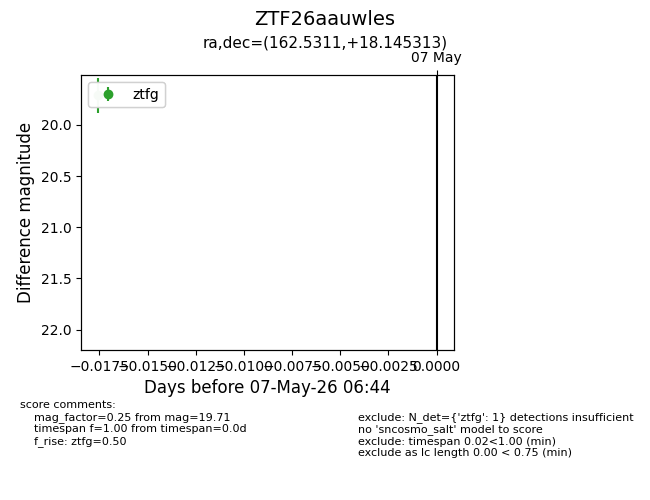
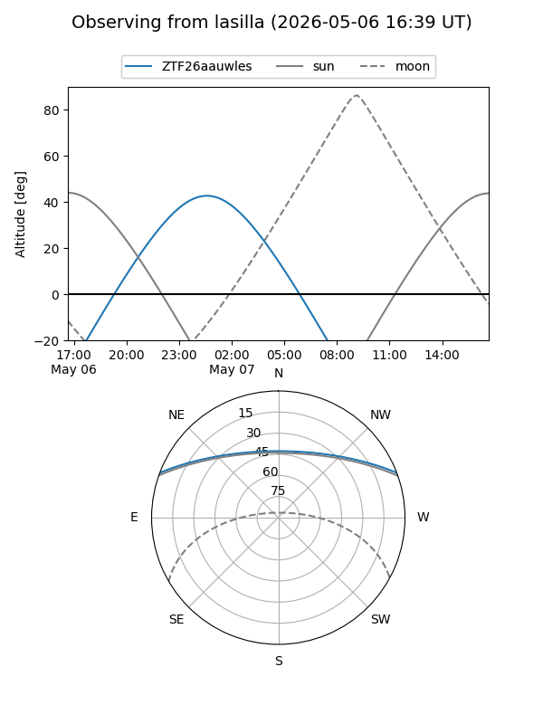
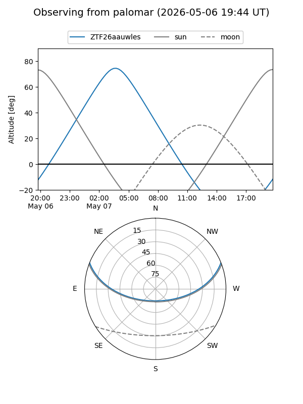

ZTF26aauwles
Target ZTF26aauwles at 2026-05-07 06:46
Aliases and brokers:
FINK: link
Lasair: link
ALeRCE: link
alt names
ZTF26aauwles (ztf,fink_ztf)
Coordinates:
equatorial (ra, dec) = 162.5311,+18.14531
equatorial (HMS+DMS) = 10:50:07.46,+18:08:43.13
galactic (l, b) = (224.3419,+60.69107)
Flags:
Photometry:
last ztfg=19.71
1 ztfg detections
Lightcurve

Visibility


Additional plots